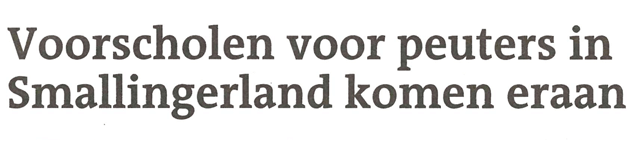

Vrijdag 22 december is de multiculturele dag. Vanaf 17.00 uur kunt u in wijkcentrum de Kouwe kennis maken met kleuren, geuren, smaken en meer uit verschillende culturen die Smallingerland rijk is.
Bekijk hier de flyer

Spelenderwijs leren op de voorschool als voorbereiding op de basisschool.
In Smallingerland gaan M.O.S., OPO Furore en PCBO Smallingerland met elkaar samenwerken om dat te realiseren.
(bron: Leeuwarder Courant)
Donderdag 21 december kunt u weer heerlijk Kerstdineren in Trefpunt @Holdert.
Inloop vanaf 17.00 uur en aanvang is 17.30 uur. Reserveren wordt aangeraden.
Bekijk het affice
7 december jl was in Brede School de Wiken een zeer geslaagd vrijwilligersfeest, door M.O.S. georganiseerd. 80 vrijwilligers en hun inzet werden in het zonnetje gezet op deze internationale vrijwilligersdag. Als afsluiting was er danstheater van Dansvisie met de voorstelling "Wachten op visite" (foto).
Een zeer indrukwekkende voorstelling door inwoners van Friesland die met eenzaamheid te maken hebben of hebben gehad. De reacties waren zeer positief.
Woensdag 1 en donderdag 2 november zijn in de Warrenhove en in MFA de Bouwen feestelijk Trefpunten geopend.
Op de foto de opening in de Warrenhove (foto: Gerard Boersen)
Trefpunten zijn te herkennen aan hun kenmerkende logo en zijn te vinden in diverse locaties in Smallingerland.
Meer weten over Trefpunten?
Van 3 november 2017 t/m 4 januari 2018 is er een expositie te zien van geselecteerde werken van Kasper H. Bruens.
Lees meer
De inzet van de M.O.S. in 2016 is in beeld gebracht.
Met partnerschap als basis en een vraaggericht aanbod werkt de M.O.S.
aan krachtige resultaten die het verschil maken voor mensen in Smallingerland.
Bekijk de infografic
Verschillende speelzalen van het Peuterspelen zijn op zoek naar vrijwillig leidsters voor een dagdeel (ochtend of middag). Een dagdeel duurt 3 uur.
Wil jij bijdragen aan
een speel- en leeromgeving voor peuters waar veilig, stimulerend, activiteiten, verzorging, positief en nog veel meer centraal staat ?
Neem dan voor meer informatie contact op met Martina van der Snee
Neem contact op

{kind=link}